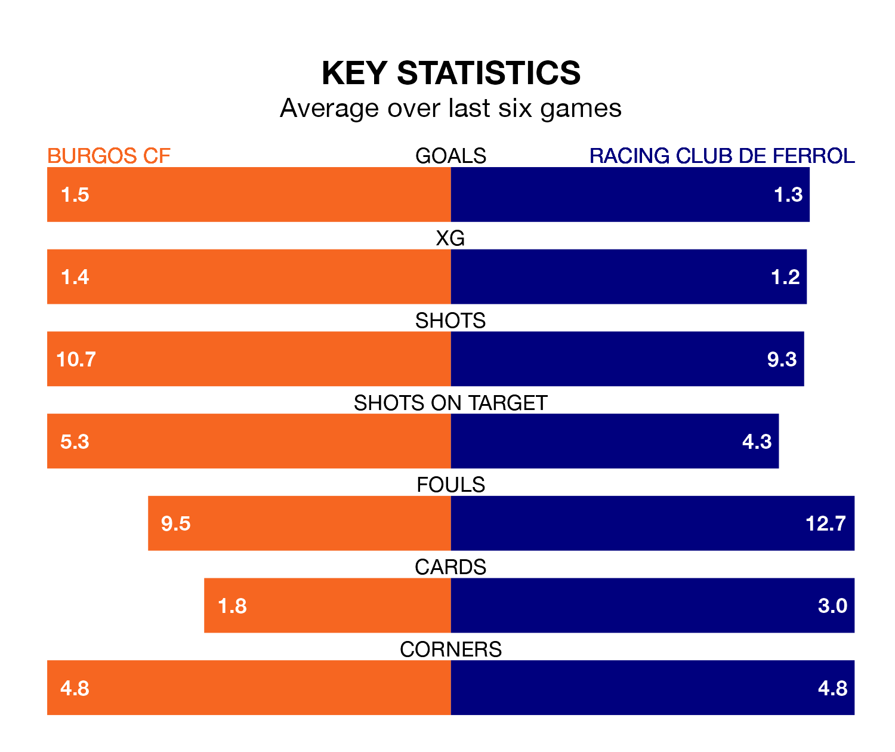

Burgos CF host Racing Club de Ferrol on Sunday at Estadio Municipal de El Plantío in the Segunda División.
In their last league match, on February 2, Burgos lost to Elche CF 2-0 away.
Racing drew, 1-1 at home against SD Eibar on February 4, with Sabin Merino scoring their goals.
Racing are third in the table after 25 games, of which they have won 11 and drawn nine, earning 42 points.
Burgos are eight places behind Ferrol in 11th, with 10 wins and six draws putting them on 36 points.
With 33 goals in 25 games so far this season, the away team are scoring more than average in the league with 1.3 goals per game. And they are conceding fewer than average, letting in 28 goals at a rate of 1.1 per game.
The hosts are also above average scorers, with 1.3 goals per game, compared to a league average of 1.2. They have also conceded 1.3 goals per game.
In the last 10 years, Burgos and Racing have played each other on eight occasions. Burgos won two of them, Racing four, and they drew twice.
On average, Burgos scored 1.2 goals and Racing 1.5 in those matches.
Their last meeting was on November 19, when they played out a 1-1 draw.
In Curro Sánchez, Burgos have one of the league's sharpest shooters so far this season. He has notched 10 goals in 24 appearances, to sit third in the scoring charts.
His goal rate of one every 206 minutes is quicker than that of Iker Losada Aragunde, Racing's top scorer with a goal every 287 minutes, and a total of seven goals in 25 games.
Burgos are in mixed form in the Segunda División, with three wins and a draw from their last six games.
With three wins and two draws over that period, Racing's form is slightly better – they have taken 11 points from 18, compared to the home side's 10.
Updated: 11:47 (UTC), 05/02/24